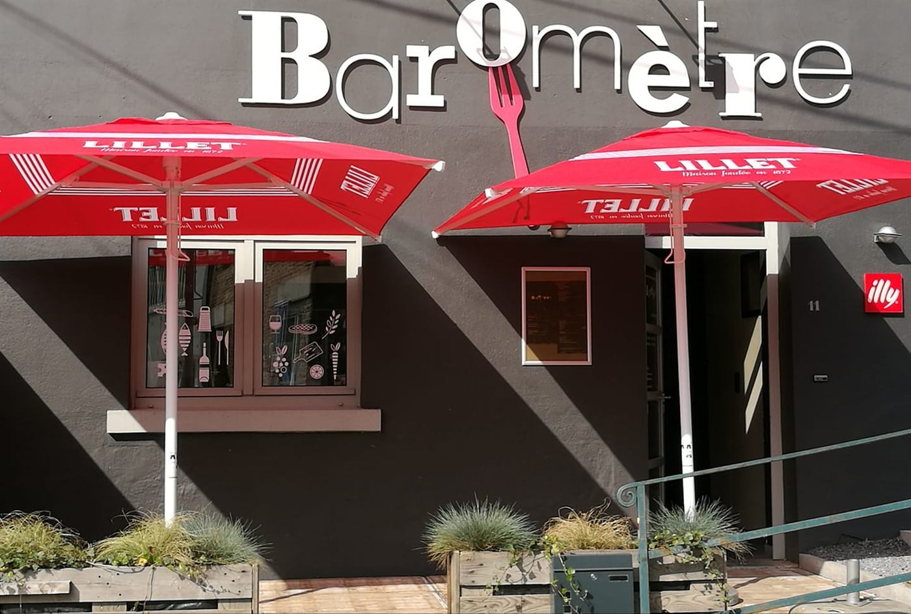
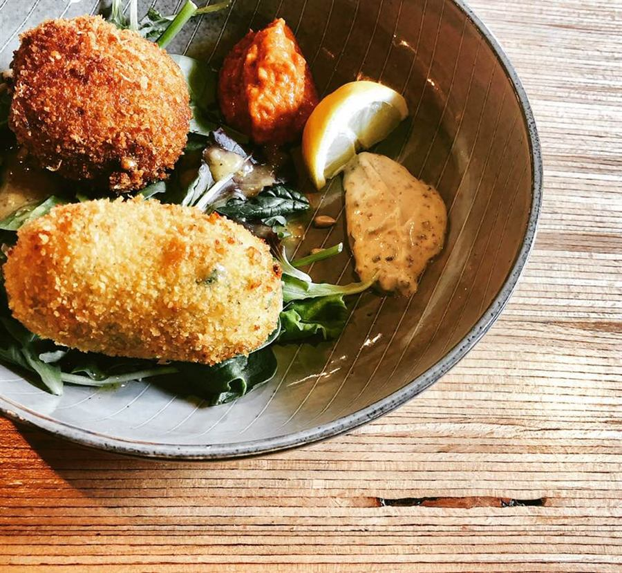
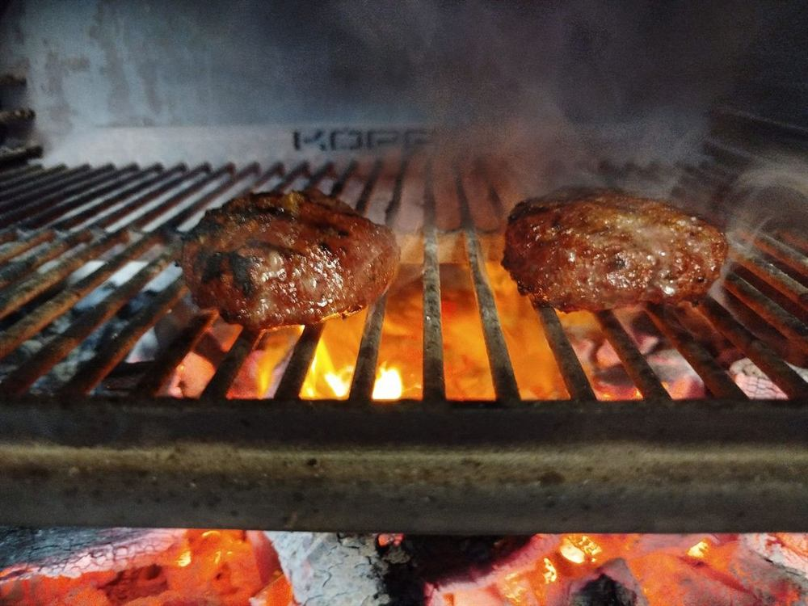
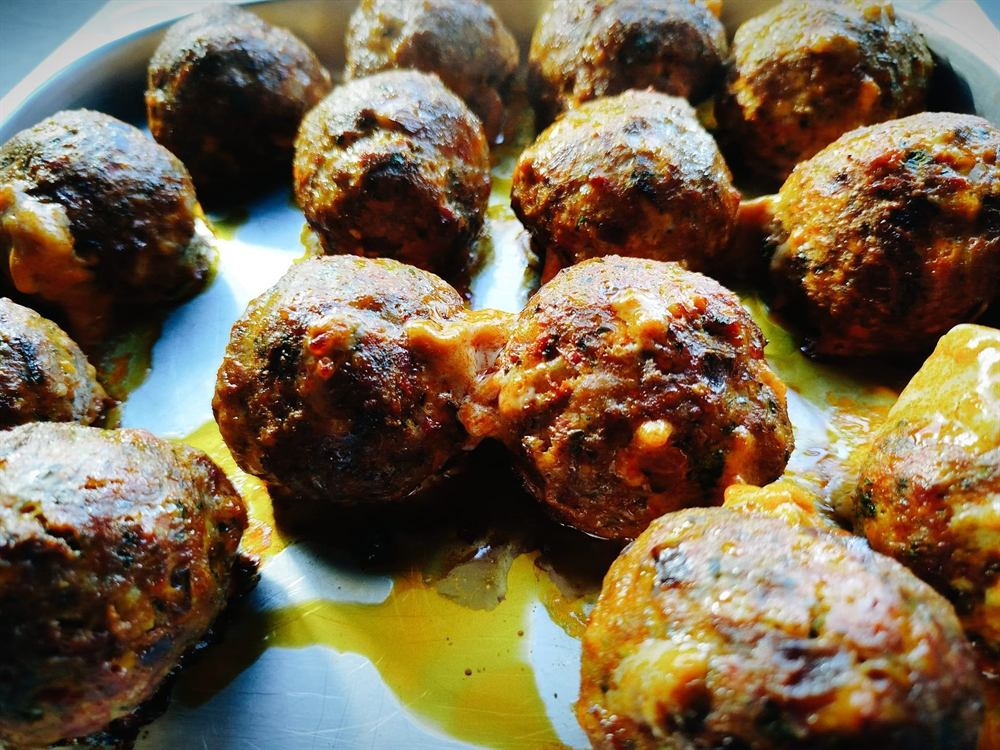
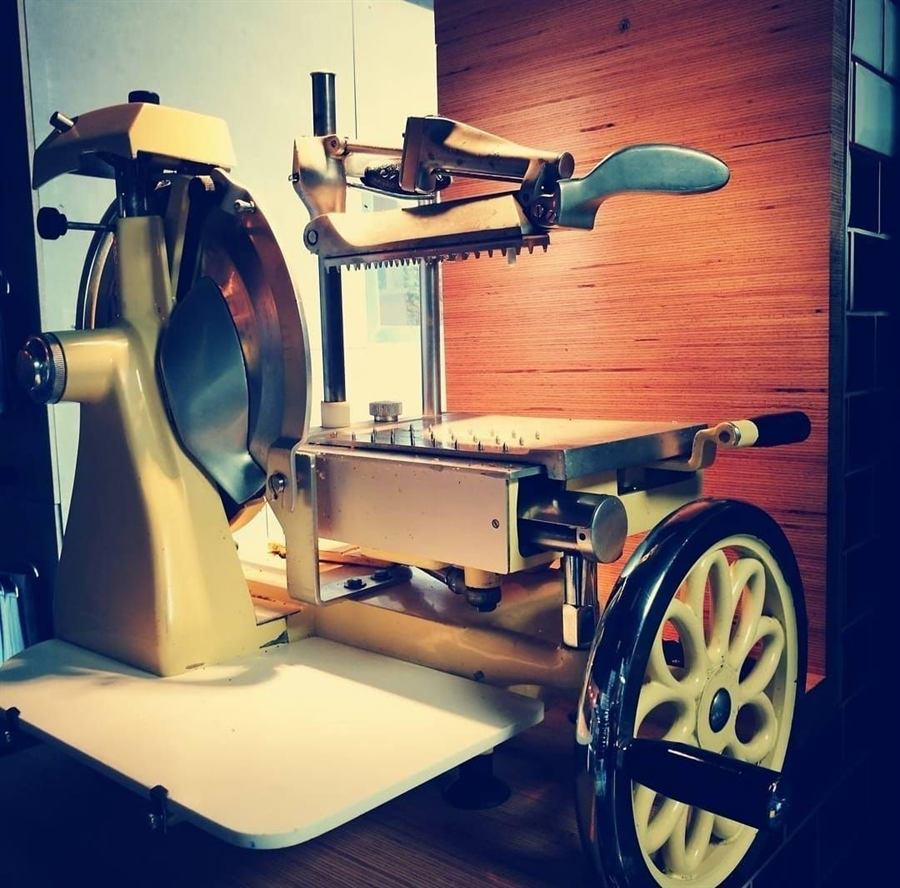
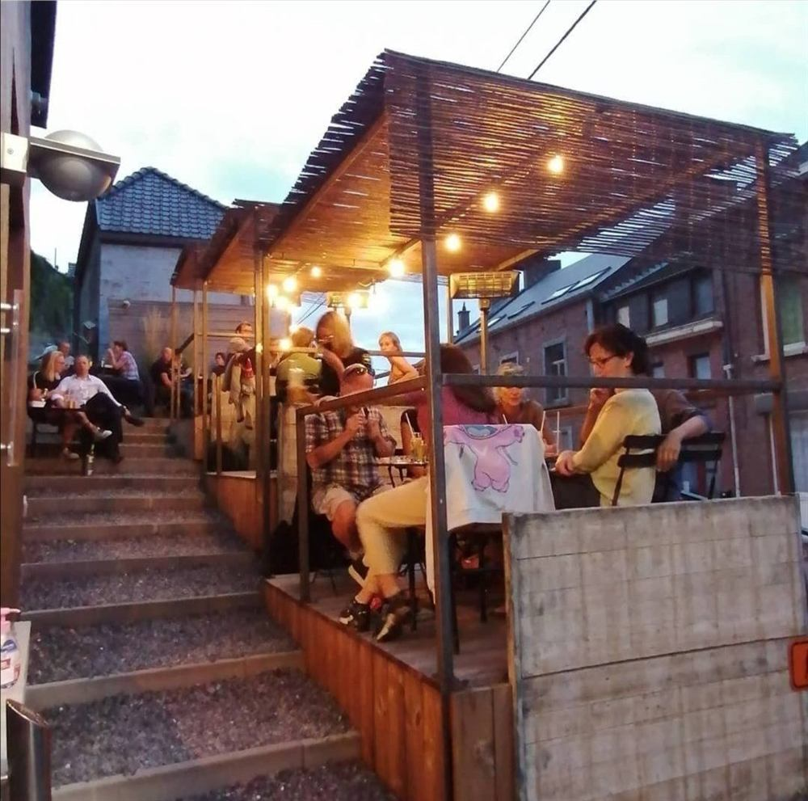
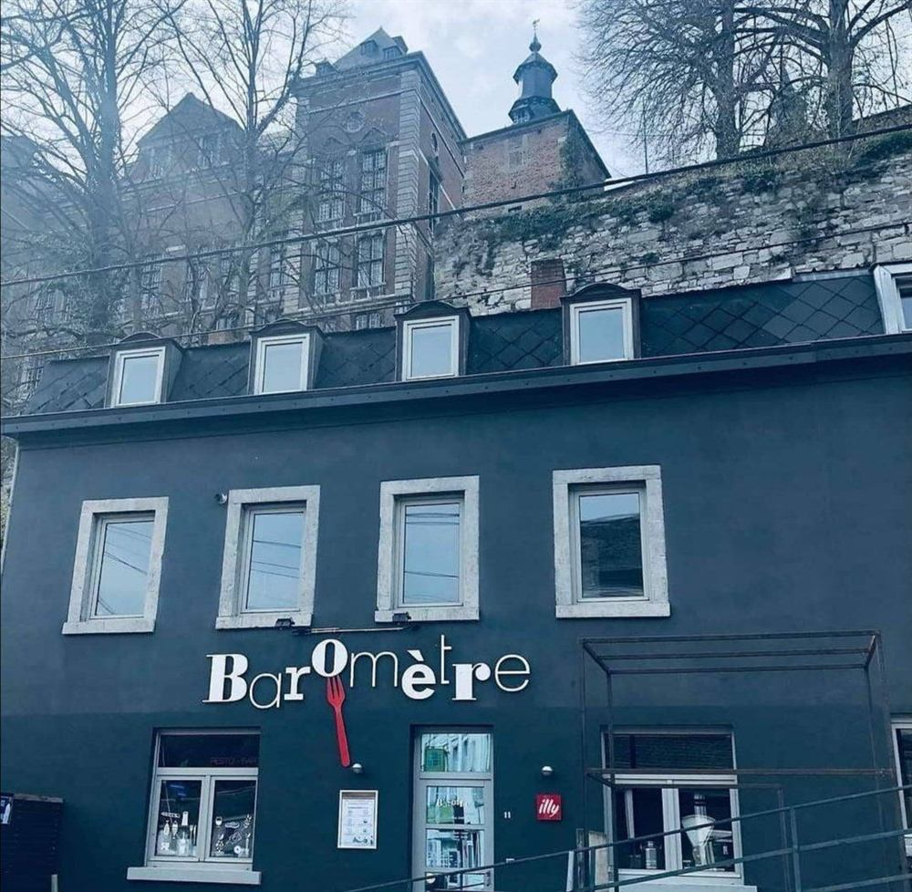

Bar à tapas, croquettes, tartares, pâtes, boulettes et grillades sur braises. Bières belges artisanales et vins. Afterworks et concerts.

La carte
Carte de juillet 2026.
- Bar à planchas
- Bar de partage
- Plats
- Bar à pasta
- Bar à grillades, cuisson sur braises
- Bar à desserts




Bières et vins
Uniquement des bières belges artisanales. Vins au verre ou à la bouteille.
Afterworks et concerts
Les dates sont annoncées sur la page Facebook du Baromètre.
Voir la page Facebook
Horaires et accès
Horaires
| Lundi | Fermé |
|---|---|
| Mardi | Fermé |
| Mercredi | Midi et soir |
| Jeudi | Midi et soir |
| Vendredi | Midi et soir |
| Samedi | Midi |
| Dimanche | Fermé |

Adresse
11, Rue Camille Giroul5150 Floreffe
Grand parking sur la place de Soviret.